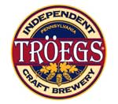
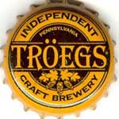

Troegs
| Location | Hershey, Pennsylvania |
| What makes them unique? | Traditional English brewing |
| Featured Brew | Mad Elf |
History –Chris and John Trogner have been working hard to get Central Pennsylvania on the brewing map. Since 1997, these Mechanicsburg natives have been handcrafting world-class beers that combine traditional English brewing techniques with the eclecticism of new American brewing. But how they reached this point is as compelling as where they are headed.
Chris and John, 18 months apart in age, were simultaneously intrigued by the art of handcrafting beer while living some 1,750 miles apart—Chris in Boulder, Colorado and John in Philadelphia.
As Chris and John would talk, a flicker of an idea gradually turned into a full-blown business plan. The brothers had always dreamed about starting a business together, and now they had brewed the perfect idea.